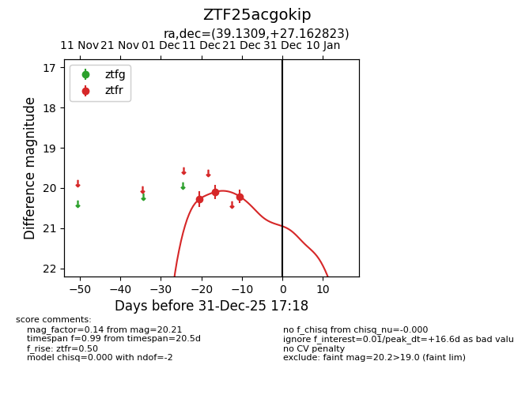
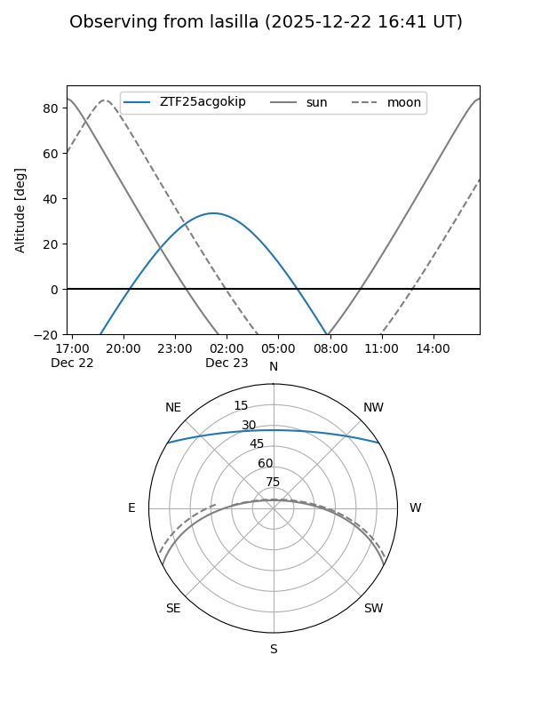
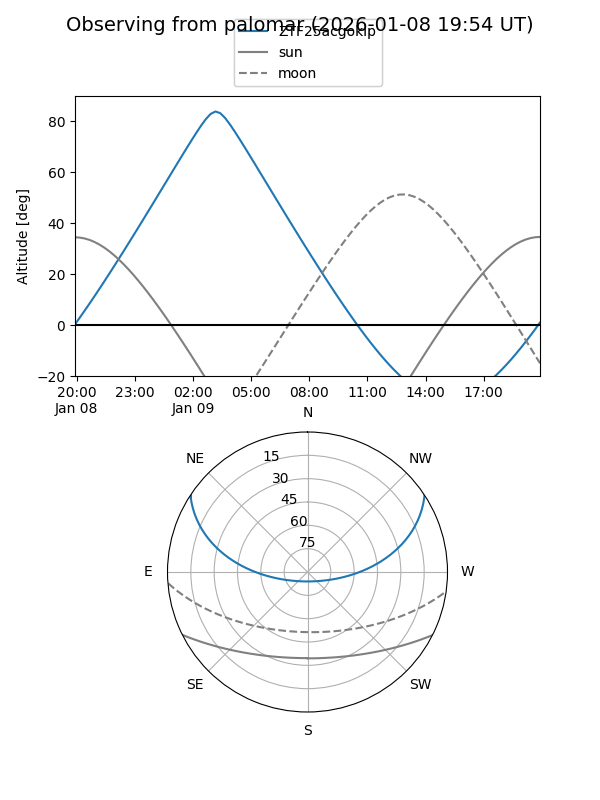
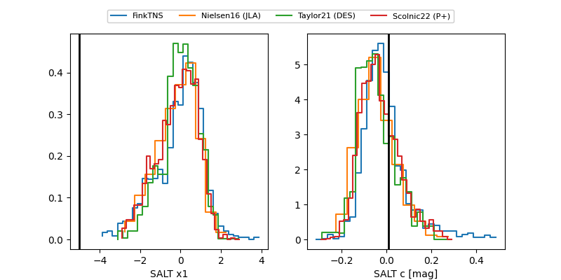

ZTF25acgokip
Target ZTF25acgokip at 2025-12-31 18:00
Aliases and brokers:
FINK: link
Lasair: link
ALeRCE: link
alt names
ZTF25acgokip (ztf,fink_ztf)
Coordinates:
equatorial (ra, dec) = 39.1309,+27.16282
equatorial (HMS+DMS) = 02:36:31.42,+27:09:46.16
galactic (l, b) = (150.0163,-30.12425)
Flags:
Photometry:
last ztfr=20.21
3 ztfr detections
Lightcurve

Visibility


Additional plots
